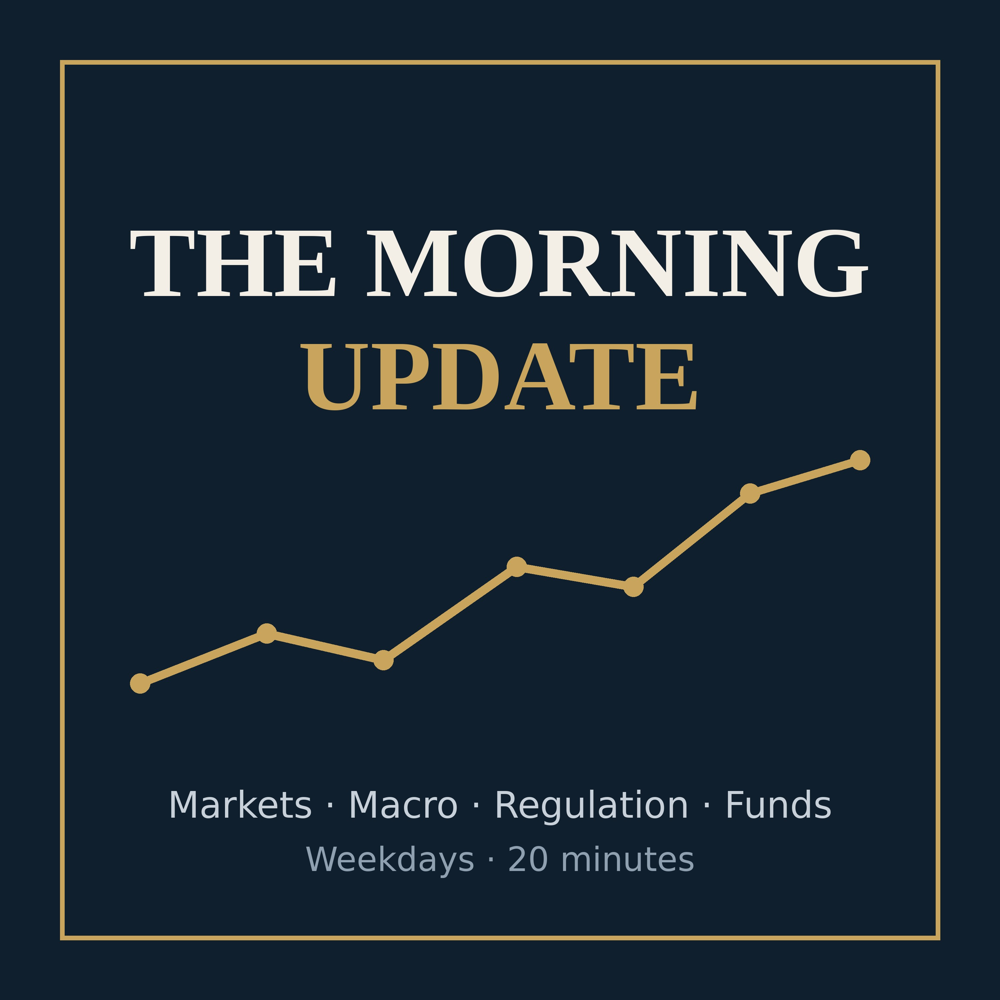

A 20-minute weekday digest of markets, macro, regulation and fund industry news for the operating side of an investment firm. AI-generated from public sources; for information only, not investment advice.
Apple Podcasts: Library → ••• → Follow a Show by URL → https://adcc228.github.io/6AD-morning-update/feed.xml